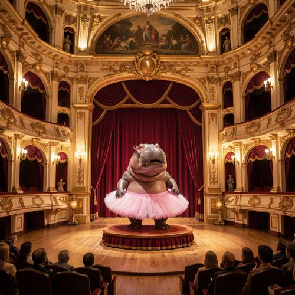
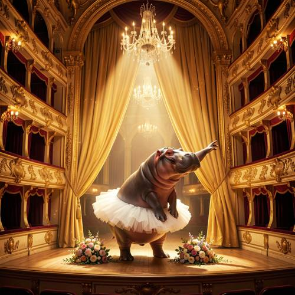

Action — Please design a magnificent Baroque Opera House interior, center stage
Please design a magnificent Baroque Opera House interior, center stage, a hippo wearing a tutu is elegantly curtain call.

Direct — one call, no iteration

Continuum — Kimi K3 + FLUX.2-klein-9B
Judge — Direct
FAILAction - Full-body (Character/Anthropomorphic) — The hippopotamus is depicted standing still on a circular platform on stage. Its arms are slightly out to the sides, but it is not performing a bow, curtsy, or any other distinct action that clearly represents a 'curtain call.' It is in a static pose.
PASSStyle — The opera house interior is depicted in a grand and opulent style. It features multiple tiers of curved balconies with gilded, ornate railings and decorations, red velvet curtains, a large painted mural above the proscenium arch, and a crystal chandelier. This aesthetic is consistent with the magnificent and decorative nature of the Baroque style.
PASSCompound - Feature Matching — The image clearly shows a large, grey hippopotamus standing on a stage. The hippopotamus is wearing a pink, layered tutu around its waist.
Judge — Continuum
PASSAction - Full-body (Character/Anthropomorphic) — The image depicts a full-bodied hippopotamus standing on a wooden stage. It is in a pose characteristic of a curtain call, with one of its forelimbs raised and extended outwards and upwards in a theatrical gesture.
PASSStyle — The interior of the opera house is depicted in a Baroque style, characterized by its ornate and magnificent details. This includes multiple tiers of balconies decorated with elaborate gold-colored mouldings and carvings, grand crystal chandeliers hanging from the ceiling, and a general sense of opulence and grandeur.
PASSCompound - Feature Matching — The central figure in the image is a hippopotamus, and it is shown wearing a white, frilly tutu around its waist.
What the agent did
Thinking
We need generate image, inspect, iterate. Need use flux2-klein fixed. User asks design magnificent Baroque Opera House interior, center stage, hippo wearing tutu elegantly curtain call. Need likely typo means elegantly taking a curtain call. Generate. Need no seed, fixed maybe dimensions harness? default 1024x1024. Let's call generate.
Step 1 — `generate_image`
{
"model": "flux2-klein",
"prompt": "A magnificent Baroque opera house interior, ornate gilded balconies and red velvet boxes, crystal chandeliers, dramatic golden stage lighting. Center stage, a large graceful hippopotamus wearing a layered white ballet tutu stands upright in an elegant curtain call pose, one arm extended and head bowed, curtains sweeping open behind it, bouquets of flowers at its feet. Cinematic composition, rich detail, theatrical atmosphere, realistic but whimsical."
}
Result img_0
Thinking
Need inspect. Image looks very good. Hippo upright on hind legs with front leg extended, tutu, center stage, opulent. "elegantly curtain call" maybe should be taking a bow, but image is elegant gesture. Baroque interior extremely good. Could mark best immediately. Maybe no need edits. Need perhaps inspect details? no text. Mark img0.
Step 2 — `mark_best`
{
"image": "img_0",
"reason": "The image clearly presents an ornate Baroque opera house with a center-stage hippo in a tutu performing an elegant curtain-call pose. Composition, lighting, and whimsical realism all match the prompt well."
}
Thinking
Need final concise maybe describe.
Model
Created a magnificent Baroque opera house scene featuring a tutu-clad hippo center stage in an elegant curtain-call pose, surrounded by gilded balconies, chandeliers, sweeping curtains, and bouquets.